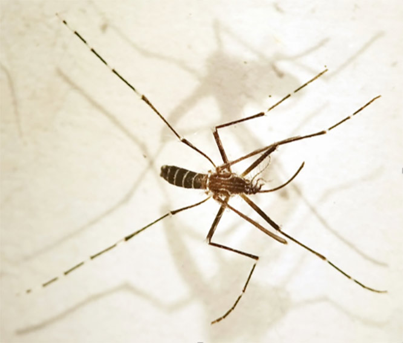
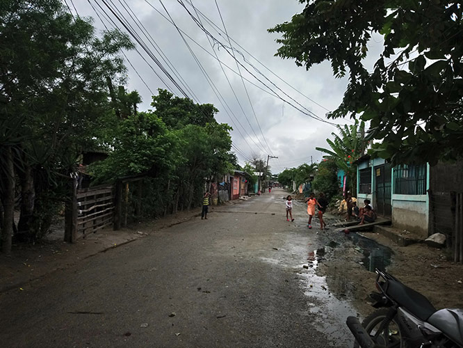
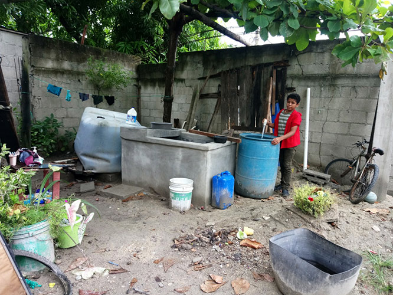
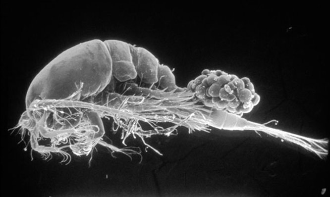
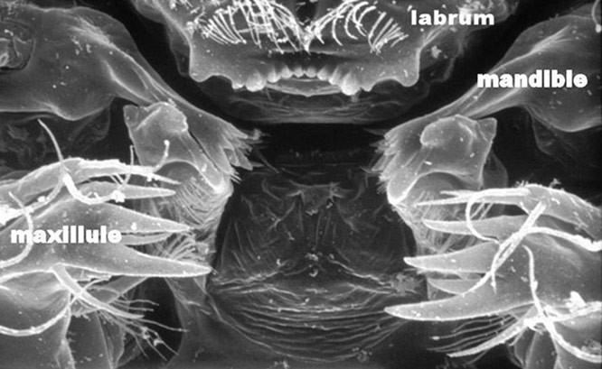
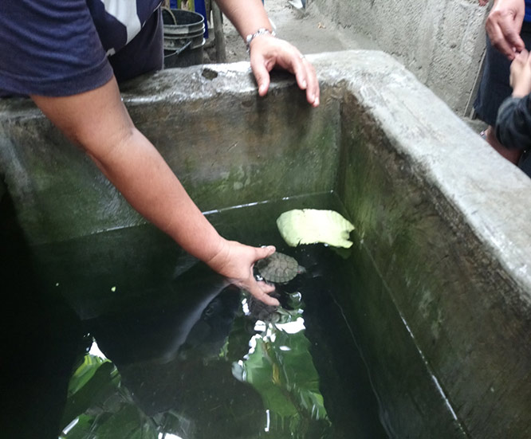
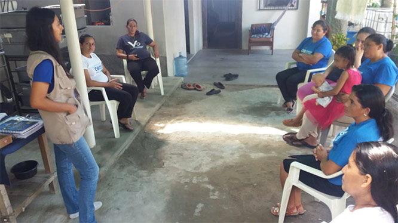
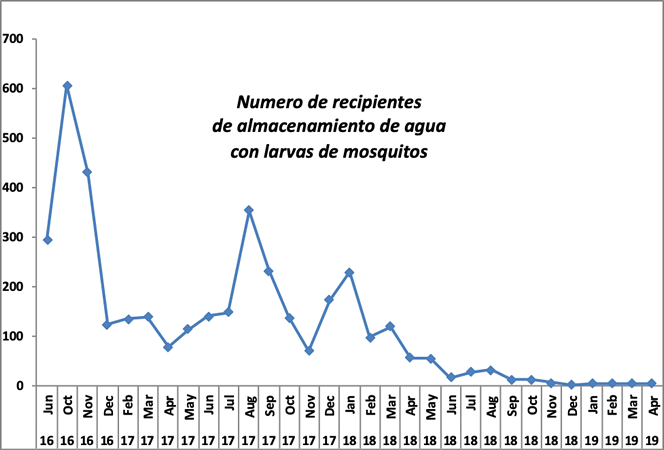
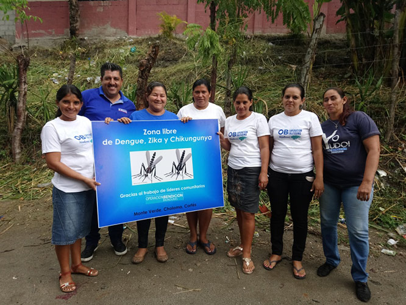

|
 |
 |
Puntos de
Inflexión Ecológica
- Cómo funcionan?
- Transformando círculos viciosos a círculos virtuosos
- Ingredientes para el éxito
- Elaboren sus propios Puntos de Inflexión Ecológica
Historias por Región
Historias por Tema
- Agricultura
- Agua y Cuencas
- Bosques
- Ecosistemas Urbanos
- Educación
- Energía
- Negocios
- Pesquerías
- Salud Pública
Videos Cortos
- Salvando un arrecife coral y una pesquería
(Filipinas) - Revitalizando vecindades urbanas con jardines comunitarios
(Nueva York) - Revirtiendo la deforestación tropical con bosques comunitarios
(Thailandia) - Rellenando aguas subterráneas con captación pluvial
(Rajastán, India) - Escapando la trampa de pesticidas
(India)
Explicando el Éxito
- Salvando un arrecife coral y una pesquería
(Filipinas) - Revitalizando vecindades urbanas con jardines comunitarios
(Nueva York) - Revirtiendo la deforestación tropical con bosques comunitarios
(Thailandia) - Rellenando aguas subterráneas con captación pluvial
(Rajastán, India) - Escapando la trampa de pesticidas
(India)

Ecología Humana: Presenta los principios de la ecología humana que sirven de fundamento a los Puntos de Inflexión Ecológica
La Historia de Monte Verde (Honduras): Erradicación comunitaria de Aedes aegypti (el mosquito responsable de Zika y dengue)
- Autor: Gerry Marten, Xenia Caballero, Hilda Romero, Arnulfo Larias
- Publicado: Febrero 2019
- Información sobre participantes en esta historia
- Vea este articulo en ingles
- Vea un video de esta historia (9 minutos)
Durante años, los mosquitos Aedes aegypti y el dengue eran una parte habitual de la vida en Monte verde, una humilde comunidad peri-urbana en Honduras. Entonces, en 2016, Monte Verde fue invadido no sólo con dengue, sino también con Zika y chikungunya. Todas estas enfermedades fueron transmitidas por Aedes aegypti. Desesperado, y con la ayuda de una organización sin fines de lucro, la comunidad se embarcó en un esfuerzo pionero para deshacerse de los mosquitos y las enfermedades. Los residentes de Monte Verde utilizaron el control biológico con copépodos, tortugas bebé y alevines de tilapia, todos ellos depredadores altamente eficaces de larvas de mosquitos, para prevenir la producción de mosquitos en pozos y recipientes tales como pequeños tanques de cemento y barriles plásticos usados para almacenar agua para uso doméstico. Si bien el control biológico no implicaba prácticamente ningún gasto en efectivo, sí requería una participación plena de la comunidad para garantizar que funcionara. La clave era un pequeño equipo de voluntarios comunitarios, que trabajaban con sus vecinos para lograr el éxito. Después de más de un año de experimentación, resolviendo los detalles de cómo hacerlo y superando numerosos obstáculos técnicos y sociales, los voluntarios y residentes de Monte Verde elaboraron un kit de herramientas para erradicación de mosquitos que funciona eficazmente, sosteniblemente y respetuoso con el medio ambiente. La producción de mosquitos de pozos y contenedores de almacenamiento de agua es ahora cero. Lo más importante, no ha habido casos de Zika, dengue o chikungunya desde el principio de 2017. Monte verde puede servir como modelo para extender el mismo éxito a otras comunidades.
El problema
Una sola especie de mosquito (Aedes aegypti) es una de las amenazas más graves para la salud en el planeta. Es responsable del Zika, el dengue, la chikungunya, y la fiebre amarilla. Desde que la campaña global de la Organización Mundial de la Salud, utilizando DDT contra enfermedades transmitidas por mosquitos, se derrumbó en los años setenta, el dengue ha aumentado mundialmente a cientos de millones de casos cada año, con medio millón de niños hospitalizados anualmente debido a complicaciones que amenazan la vida, y 20.000 fatalidades. Chikungunya, Zika y defectos congénitos debidos al Zika se han extendido a través de América Latina.

El mosquito Aedes aegypti, que es responsable de Zika, dengue, chikungunya y la fiebre amarilla, tiene un diseño característico de "lira" en la espalda.
Porque no hay vacunas para estas enfermedades (excepto la fiebre amarilla), la única manera de controlarlas es por la lucha contra el mosquito, pero ha habido poco progreso a lo largo de los años a pesar de los cientos de miles de millones de dólares gastados mundialmente en insecticidas a lo largo de los años. De hecho, está empeorando, y con el cambio climático global, las enfermedades amenazan con extenderse de los trópicos a Norteamérica y Europa. Ahora se gastan grandes sumas de dinero en el desarrollo de enfoques basados en la ingeniería genética, tales como los mosquitos OMG. No sabemos cuán efectivos serán estos nuevos métodos, pero podemos estar seguros de que serán caros.
Un enfoque alternativo
¿Hay otra manera? El éxito pionero de Monte Verde, una comunidad de 350 casas cerca de San Pedro Sula en Honduras, ha mostrado que la respuesta es "Sí!". Monte Verde ha utilizado el control biológico con depredadores de larvas de mosquitos para aniquilar a los mosquitos y liberar a sus residentes de las enfermedades.

La calle principal de Monte Verde durante la temporada de lluvia.
Al igual que muchas comunidades pobres y descuidadas en América Latina, Monte Verde no tiene un suministro continuo de agua por tuberías. De hecho, el sistema de agua improvisado de la comunidad suministra agua (para la limpieza domestica y el cocimiento, pero no para beber) a cada casa por sólo unas pocas horas cada semana. Cada hogar está obligado a tener un gran número de recipientes de almacenamiento de agua, tales como pequeños tanques de cemento (conocidos como “pilas”), barriles de plástico de 200 litros y cubetas de 20 litros, con el fin de tener agua para el resto de la semana, y estos recipientes de almacenamiento de agua son donde los mosquitos se crían.

Recipientes de almacenamiento de agua (de izquierda a derecha): cisterna (con la botella de cloro en la parte superior), pila (el depósito de cemento), cubeta, barril plástico. La ropa se lava en tablas de lavar como se ve al lado izquierdo de la pila. El muchacho es un voluntario de Monte Verde, comprobando para larvas de mosquitos en el barril.
Durante años, los mosquitos (Aedes aegypti) y el dengue fueron una parte habitual de la vida del pueblo. Sin embargo, después de sufrir cientos de casos de dengue, chikungunya y Zika durante 2014-2016, Monte Verde se embarcó en 2016 en un esfuerzo por eliminar la transmisión de estas enfermedades por deshacerse del mosquito. El proyecto fue facilitado por un pequeño equipo de la organización sin fines de lucro Operación Bendición Honduras, con dos personas asignadas a trabajar tiempo completo con la comunidad.
La inspiración de Vietnam
La inspiración de Monte Verde para el control biológico vino de Vietnam, que es el único lugar en el mundo conocido por haber tratado eficazmente con Aedes aegypti en las últimas décadas. Durante los años noventa, aproximadamente 100.000 niños en Vietnam fueron hospitalizados cada año con la Fiebre Hemorrágica del Dengue, que amenazaba la vida. La motivación era fuerte cuando el gobierno vietnamita desarrolló un paquete multi-método para el control de Aedes aegypti y dengue. Lanzaron una campaña masiva para llevar el paquete a aldeas y vecindarios urbanos a través de la nación. Tardó años en finalizar el trabajo, pero los resultados han sido impresionantes. Aedes aegypti y el dengue han desaparecido completamente del norte de Vietnam, y se han reducido drásticamente en el resto del país. La historia más completo de la erradicación del mosquito Aedes aegypti en Vietnam con control biológico.
Los crustáceos minúsculos conocidos como copépodos han tenido un rol central en el paquete de control de Aedes aegypti en Vietnam. A pesar de su pequeño tamaño (menos de 2 mm de largo), los copépodos son como grandes tiburones blancos para las larvas de mosquitos Un video de un minuto con copépodos en acción contra larvas de mosquitos.

Los copépodos son depredadores veraces para larvas nuevamente eclosionadas y otros animales acuáticos hasta dos veces su tamaño. Esta hembra con sacos de huevos tiene aproximadamente 1.5 milímetros de largo. Foto: Michael Brown.

Primer plano de la boca de un copépodo, que ingiere larvas de mosquitos como un wood chipper (vea video). Foto: Michael Brown.
Aunque son bien comunes en los hábitats acuáticos de todo el mundo, los copépodos no suelen llegar por su cuenta a los pozos y recipientes de almacenamiento de agua. Sin embargo, los copépodos recolectados de hábitats acuáticos naturales pueden ser cultivados e introducidos en recipientes, donde se multiplican a números tan grandes que consumen virtualmente todas las larvas de mosquitos que eclosionan. Los copépodos se cuidan de sí mismo y sobreviven en un recipiente mientras haya agua. No dependen de las larvas de mosquitos para su alimentación porque comen una gran variedad de pequeños animales acuáticos.
El kit de herramientas para el control biológico
El control biológico es eficaz, respetuoso con el medio ambiente y sostenible. No cuesta casi nada, salvo una fuerte dosis de participación comunitaria para asegurar que cada hogar haga lo necesario para que el control biológico funcione. La estrategia de Monte Verde era adaptar la estrategia de control biológico de Vietnam a las condiciones ecológicas y sociales en Honduras.
El control biológico en Monte Verde empleó tres animales diferentes que se alimentan de larvas de mosquitos:
- Copépodos. Una especie copépodo muy adecuada se encontró en un pequeño pantano a pocos cientos de metros del borde de Monte Verde. Esta especie es común en toda América Latina, y debido a que es la especie de copépodo más grande, también es el depredador más eficaz. Después de establecer un cultivo de estos copépodos, Monte Verde podía producir copépodos por los millares prácticamente sin costo. Era fácil introducirlos en una variedad de recipientes de almacenamiento de agua alrededor de la comunidad, y cada recipiente con copépodos podía servir como fuente de copépodos para otros recipientes simplemente transfiriendo una cubeta de agua de un recipiente a otro. Los copépodos son especialmente eficaces en los pozos, y también son efectivos para eliminar las larvas de mosquitos en recipientes, aunque pueden perderse de un recipiente cuando se limpia. Más detalles sobre los copépodos para el control de mosquitos.
- Tortugas (Trachemys scripta). Una tortuga puede comer mil larvas de mosquitos todos los días. Un video de un minuto mostrando una tortuga en acción contra las larvas de mosquitos. Ningunas larvas sobreviven cuando una tortuga está en un recipiente de almacenamiento de agua. Si la tortuga se guarda en un recipiente y larvas se ven en otro recipiente, la tortuga puede ser movida para eliminar las larvas allí. Una tortuga bebé, costando alrededor de un dólar estadounidense, fue proporcionada a cada casa en Monte Verde que quería probarla. Las tortugas se convertían en mascotas familiares y vivirán durante años, siempre y cuando se alimenten un poco de tortilla, col, u otros restos domésticos para mantenerlas saludables. Aunque se sabe que las tortugas de mascota a veces pueden ser una fuente de infección de salmonella para los seres humanos, investigaciones sobre el asunto han establecido sin duda que las tortugas no presentan ningún peligro para la salud en recipientes de almacenamiento de agua como los de monte verde. Más detalles sobre las tortugas para el control de mosquitos.

Una Tortuga bebe (Trachemys scripta) en una pila con repollo como alimento. Las tortugas son mascotas que viven muchos años. Pueden ser movidas de un recipiente al otro según sea necesario.
- Alevines de tilapia (Oreochromus niloticus). No hay producción de mosquitos cuando estos peces están en el agua. Un video de 30 segundos con alevines de tilapia en acción contra larvas de mosquitos. tilapia fingerlings in action against mosquito larvae Con alevines de tilapia disponibles a un costo muy bajo de un criadero del gobierno hondureño que los produce para la acuicultura (USD 2.00/1000 alevines), los peces fueron distribuidos a todos los hogares que los querían. Al mismo tiempo que las familias usaban tilapia para la erradicación de mosquitos, podían alimentar los restos domésticos a los peces para criarlos como alimento.
Porque nunca es posible alcanzar un 100% de cobertura de contenedores de almacenamiento de agua con control biológico, es razonable preguntar si la erradicación local puede lograrse en condiciones realistas. La respuesta es "Sí" debido a los "sumideros de huevos" que desperdician los huevos de los mosquitos. Los sumideros de huevos son la clave para la erradicación local de mosquitos. Cuando copépodos, tortuguitas o peces están en un recipiente con agua, los huevos que los mosquitos ponen allí se desperdician porque las larvas eclosionadas de esos huevos no sobreviven para volverse en mosquitos adultos. De hecho, la transformación de los posibles criaderos de mosquitos (como pilas, barriles, pozos) en sumideros de huevos es más eficaz que deshacerse de los mismos criaderos. La regla práctica es simple: "Si posible, utilice el control biológico o algún otro método para transformar un recipiente en sumidero de huevos. Si la transformación no es posible, deshágase del recipiente o reemplácelo con un recipiente que pueda ser transformado en sumidero de huevos." La experiencia en Vietnam demostró que una población de mosquitos colapsa cuando suficientes criaderos se transforman. Lea más sobre los sumideros de huevos.
Poniéndose en marcha
El proyecto Monte Verde comenzó en 2016 con reuniones educativas celebradas por el personal de Operación Bendición Honduras con la comunidad para informar a la gente acerca de:
- La conexión entre los enjambres de mosquitos en su comunidad y los pequeños "bichos" (es decir, larvas de mosquitos) en sus pozos y recipientes de almacenamiento de agua; y la conexión entre los mosquitos y el gran número de casos de Zika, dengue y Chikungunya que estaban sufriendo.
- Cómo el control biológico podría ayudar a hacer algo al respecto.
Un resultado muy importante fue la aparición de un núcleo de aproximadamente 10 voluntarios comunitarios. Estos voluntarios han sido una clave para el éxito, trabajando con sus vecinos para poner el control biológico en uso en cada casa. Visitan cada hogar al menos una vez al mes para buscar larvas o pupas de mosquitos y ver cómo la familia está utilizando los métodos de erradicación. Para fines de monitoreo, un voluntario registra el número de larvas o pupas que se ven y discute con la familia cómo mejorar lo que está haciendo.

Reunión de los voluntarios de Monte Verde. Los voluntarios son principalmente madres y amas de casa aunque algunos hombres y muchachos también están incluidos.
El objetivo ha sido asegurar tanto como sea posible que cada recipiente de almacenamiento de agua en la colonia estuviera cubierto por uno o más de los métodos de control biológico.
Ha sido necesario averiguar cuáles formas de control biológico son mejores para cuáles tipos de recipientes. En otras palabras, ¿cómo se podrían mantener copépodos, tortuguitas o peces a largo plazo en diferentes tipos de recipientes en condiciones reales de almacenamiento de agua y uso de agua? Esta diversidad de herramientas proporciona el alcance para emparejar el tipo correcto de control biológico a cada clase de recipiente, incluyendo como el recipiente es utilizado por la familia y las preferencias que tienen diferentes familias para copépodos, tortugas o peces. Es posible emplear más de una forma de control biológico para un recipiente en particular si una familia desea hacerlo, una redundancia que ayuda a asegurar el éxito.
Se tardó más de un año de arduo trabajo y experimentación del pueblo de Monte Verde para hacer realidad los detalles para el uso eficaz del control biológico, refinar el proceso con la comunidad, y al final forjar el control biológico en una solución sostenible. Durante este tiempo, el kit de erradicación de mosquitos se expandió más allá del control biológico para incluir medidas tales como deshacerse de recipientes innecesarios, reemplazar recipientes difíciles de manejar con recipientes más receptivos al control, y usar larvicidas respetuosas del medio ambiente para suprimir la producción de mosquitos cuando otros métodos temporalmente fallan. Más información sobre los larvicidas empleadas en Monte Verde.
Lo siguiente es un breve resumen de cómo ha funcionado el kit de herramientas:
- Pozos. Hay 142 pozos en las viviendas de Monte Verde. Antes de que comenzara el proyecto, los pozos eran "fábricas" produciendo miles de mosquitos cada día. Copépodos completamente eliminaron la producción de mosquitos en los pozos. Los copépodos también resultaron ser la manera más eficaz de prevenir la producción de mosquitos en el agua dentro de llantas que forraban los pozos para soporte estructural. Para mayor seguridad, muchas familias han optado por agregar pescados o una tortuguita a su pozo, junto con copépodos. Algunos pozos abandonados y severamente contaminados han sido sellados con cemento porque los depredadores de control biológico no pueden vivir bajo tales condiciones.
- Pilas y barriles. Las tortuguitas resultaron mejores que copépodos para pilas y bariles Los copépodos pueden ser perdidos cuando el recipiente se limpia, pero esto no es un problema para las tortugas, que pueden ser trasladadas fácilmente a otro recipiente durante la limpieza. Al principio había un problema con las tortuguitas escapando, pero las familias aprendieron a cuidar de ellas para que no escaparan. Algunas familias han podido prevenir la producción de mosquitos en sus barriles, cubriendo los barriles con tapas apretadas para bloquear la entrada de mosquitos, aunque los mosquitos pueden volar a través de incluso un pequeño espacio entre una tapa y un barril.
- Cubetas. Al comienzo del proyecto había 1849 cubetas en Monte Verde. Las cubetas no son un lugar práctico para la sobrevivencia de copépodos o peces a largo plazo porque el agua se vierte fuera de cubetas tan frecuentemente. Se montó una campaña para deshacerse de cubetas innecesarias y reemplazarlas con grandes "cisternas" de plástico en las que copépodos pueden sobrevivir y prevenir la producción de mosquitos. Ahora hay 1147 cubetas en Monte Verde. Cuando no en uso, las cubetas se almacenan para que no recojan el agua de lluvia. Si se observan larvas de mosquitos en una cubeta con agua, una tortuga del hogar puede ser trasladada a la cubeta durante unas horas para eliminar las larvas, o el agua contiendo larvas puede ser vertida en una pila que contenga una tortuga que comerá las larvas.
El camino hacia el éxito
Aunque había numerosos retos e incluso contratiempos durante los primeros dieciocho meses del proyecto, todo el sistema estaba funcionando lo suficientemente bien a principios de 2018 para la población de mosquitos a declinar mes tras mes durante el año. Ahora no hay ninguna producción de mosquitos en los pozos y recipientes de almacenamiento de agua en Monte Verde, un llamativo contraste con las 43.218 larvas y pupas contadas durante una encuesta de base en medio de 2016 cuando comenzó el proyecto.

El numero de recipientes de almacenamiento de agua (pilas, barriles, cisternas, cubetas) observados a contener larvas de Aedes aegypti durante junio 2016 a abril 2019.
El impacto en las enfermedades ha sido igualmente dramático. No ha habido casos reconocibles del dengue o Zika en Monte Verde durante 2017-2018, y el último caso de chikungunya fue en abril de 2017.

Los voluntarios de Monte Verde con un rótulo declarando que Monte Verde está libre de las enfermedades transmitidas por el mosquito Aedes aegypti.
No soy personalmente consciente de este tipo de éxito erradicando el mosquito Aedes aegypti en otras partes de América Latina a cualquier escala, grande o pequeña, desde el colapso del DDT hace 40 años. El éxito de Monte Verde es una inspiración para miles de comunidades similares que hagan lo mismo. No tenemos que depender de soluciones costosas para deshacerse del mosquito y las enfermedades a nivel local. Y no es necesario esperar al gobierno. Las comunidades locales pueden hacerlo por sí mismos si solo reciben ayuda para empezar.
El proyecto de Monte Verde ya está listo para una nueva fase. Ha llegado el momento de dar a conocer el "modelo de Monte Verde" y lo que ha logrado, por lo que el control biológico y sus beneficios pueden ser ofrecidos a los demás. Monte Verde puede servir como un sitio de demostración para mostrar en detalle cómo hacerlo. También podría ser un productor y proveedor de copépodos nativos, tortugas nativas y alevines de tilapia que otras comunidades necesitarán para embarcarse en su propia erradicación de Aedes aegypti.
El papel fundamental de los voluntarios en la historia de Monte Verde destaca la importancia de desarrollar un equipo fuerte de voluntarios en cada nueva localidad. Los voluntarios de Monte Verde comenzaron como residentes ordinarios de una comunidad plagada de mosquitos. Ahora son científicos ciudadanos con experiencia en la erradicación de mosquitos por control biológico y un compromiso para continuar mejorando la efectividad y la sostenibilidad del kit de herramientas de erradicación de mosquitos para su comunidad. Los voluntarios han desarrollado una gran cantidad de conocimientos prácticos y experiencia con la organización comunitaria para la erradicación de Aedes aegypti. Esta habilidad les permitirá servir como "educadores" ayudando a otras comunidades con la capacitación necesaria. La consecuencia puede ser una cascada de empoderamiento de comunidades locales para lograr una vida más saludable.
Ingredientes para el Éxito
¿Qué lecciones ofrece la historia de Monte Verde para ayudar a otras comunidades a liberarse de las enfermedades transmitidas por Aedes aegypti? ¿Por qué fue tan exitoso Monte Verde? ¿Cuál fue la "palanca" que impulsó a Monte Verde de ser invadido por mosquitos y enfermedades a deshacerse de ambos?
La "palanca" tuvo dos componentes principales:
- Una eco-tecnología apropiada y eficaz. En la historia de Monte Verde, la eco-tecnología fue el control biológico junto con otros métodos que resultaron de uso práctico para prevenir la producción de mosquitos en pozos y recipientes de almacenamiento de agua.
- La organización social para poner la eco-tecnología efectivamente en uso. Los voluntarios de Monte Verde estaban en el corazón de esa organización social.
Los siguientes "Ingredientes para el Éxito" resumen principios de diseño para la eco-tecnología y la organización social y cómo se manifiestan en la historia de Monte Verde. Vea una explicación de Ingredientes para el Éxito en historias exitosas por lo general.
- Estímulo y facilitación exteriores. Los forasteros pueden ser una fuente de ideas frescas. Mientras es esencial la acción local, las historias de éxito típicamente comienzan cuando gente o información externa a la comunidad estimula un nuevo entendimiento del problema y brinda ideas transformadoras sobre cómo enfrentarlo. El proyecto de Monte Verde comenzó cuando Operación Bendición Honduras celebró reuniones comunitarias para hacer que la gente se entere de las conexiones entre:
• larvas de mosquitos en sus pozos y recipientes para almacenamiento de agua,
• enfermedades transmitidas por mosquitos,
• y lo que podrían hacer para eliminar los mosquitos y las enfermedades.
Operación Bendición Honduras no le dio dinero a Monte Verde, pero sí le asignó dos personas a trabajar tiempo completo como facilitadores con la comunidad y los voluntarios, proporcionando el ímpetu para seguir avanzando hasta que los mosquitos desaparecieron por completo.
- Conciencia compartida y compromiso comunitario. Sólidas instituciones democráticas y auténtica participación comunitaria son importantes en las historias de éxito. De particular importancia es una comprensión compartida del problema y qué hacer al respecto. Así, todos se sienten dueños de la acción que sigue. Las comunidades se adelantan con sus propias decisiones, mano de obra y recursos financieros. En Monte Verde el entendimiento compartido comenzó con las reuniones comunitarias. Este entendimiento desarrolló una mayor profundidad entre los voluntarios a medida que avanzaban con su trabajo. Los voluntarios difundieron esta comprensión a sus vecinos, cuya comprensión y compromiso también se profundizaron a medida que se convirtieron en participantes activos en la empresa.
- Compromiso duradero por parte del liderazgo local. La persistencia por parte de líderes de confianza inspira y arraiga el compromiso y participación por parte de la comunidad. Los voluntarios de Monte Verde proporcionaron el liderazgo conjunto y la persistencia necesaria para el éxito. Había bastantes problemas, pero los superaron. Los voluntarios desarrollaron una relación de trabajo constructiva con sus vecinos. Aunque los voluntarios han estado separados del Consejo Comunitario de Monte Verde, se ha mantenido una sana relación de trabajo con el Consejo.
- La co-adaptación entre el sistema social y el ecosistema. El sistema social y el ecosistema encajan entre sí, funcionando eficazmente y sustentablemente en conjunto. Las comunidades crean "comunes sociales" para ajustarse a sus "comunes ambientales." Los mosquitos y las enfermedades eran una parte del “común ambiental” en Monte Verde porque los mosquitos que se reproducen en una casa podrían propagar la Zika, el dengue o la chikungunya alrededor del vecindario. El común social para la erradicación de mosquitos se centró en los voluntarios, que movilizaron a la comunidad para manejar la parte relevante de su “común ambiental”, es decir, los pozos y recipientes de almacenamiento de agua.
- Permitir que la naturaleza haga el trabajo. En las historias de éxito ambiental, la gente da a la naturaleza la oportunidad de que sus poderes auto-organizadores impulsen la restauración. El control biológico es un "regalo" de la naturaleza para la erradicación sostenible de mosquitos a bajo costo porque las tortugas, los copépodos y la tilapia trabajan eficazmente las 24 horas del día. Una vez establecidos, estos depredadores pueden seguir prestando su servicio sin desembolso de efectivo y con relativamente poco esfuerzo de la gente para mantenerlos. Sólo es necesario proporcionarles condiciones adecuadas para que los depredadores se mantengan saludables.
- Resultados rápidos. Recompensas prontas ayudan a movilizar el compromiso de la comunidad. Aunque se tardó más de un año en que los voluntarios y sus vecinos en Monte Verde trabajaban en afinar los detalles de su kit de herramientas para erradicación de mosquitos, y otro medio año para reducir la producción de mosquitos a cero, la gente podía ver resultados tangibles poco después de que se introdujeron tortugas, copépodos o peces en sus pozos y recipientes de almacenamiento de agua. Las larvas de mosquitos desaparecieron casi inmediatamente de los recipientes que contenían estos depredadores. También hubo una notable disminución de las enfermedades dentro de unos meses después de comenzar el control biológico. Una vez que la gente vio que el control biológico verdaderamente funcionaba, el pueblo estaba más motivada para dedicar la atención y el esfuerzo necesario para mantener los copépodos, tortugas, peces y otros métodos para prevenir la producción de mosquitos en todos los criaderos.
- Un símbolo poderoso. Es común que algunos elementos sobresalientes de una iniciativa comunitaria representen el proceso de manera que consolida el compromiso de la comunidad, impulsando la acción comunitaria en una espiral ascendente del éxito engendrando más éxito. En Monte Verde el éxito en la erradicación de Aedes aegypti y sus enfermedades se convirtió en un símbolo encarnado por un cartel en la entrada de la colonia, proclamando orgullosamente que está libre de estas enfermedades. Otro símbolo significativo para Monte Verde ha sido la instalación de limpieza de basura por parte de la comunidad. El orgullo en una comunidad limpia se extiende al orgullo en la gestión de contenedores de almacenamiento de agua para prevenir la producción de mosquitos.
- Superando obstáculos sociales. Puede haber numerosos obstáculos sociales al éxito. Por ejemplo, las exigencias competitivas para el tiempo y la atención de la gente. Una clave para lograr la necesaria participación comunitaria en Monte Verde era una fuerte conexión personal entre los voluntarios y sus vecinos, trabajando cara a cara. Al principio algunas familias no querían participar en el programa. También había casas donde los dueños o residentes rara vez se veía, y "cuarterías" que carecían de la estructura familiar que normalmente se responsabilizaría de manejar recipientes de almacenamiento de agua en la propiedad. La persistencia y la "asertividad respetuosa" eran esenciales para asegurar la participación.
- La diversidad social y ecológica. La diversidad ofrece más opciones, y por lo tanto, más oportunidades para tomar buenas decisiones. La diversidad de métodos de control biológico (tortugas, copépodos, tilapia) proporcionó las opciones que cada familia necesitaba para adecuarse al método apropiado a cada uno de sus recipientes y sus preferencias familiares. La diversidad social provenía de la combinación de los residentes de Monte Verde, Operación Bendición Honduras y un asesor científico, todos trabajando juntos, cada uno contribuyendo con sus propias fortalezas.
- Memoria social y ecológica. El aprender del pasado, sus instituciones sociales, conocimientos y tecnologías, amplifica la diversidad de opciones, incluyendo opciones que se han demostrado ser efectivas a través de “la prueba del tiempo." Además, la naturaleza contiene una “memoria evolutiva”, que las larvas de mosquitos no sobreviven en lugares habitados por depredadores como tortugas, copépodos o tilapia. La experiencia previa de la Operación Bendición Honduras trabajando con comunidades para el desarrollo de agua potable fue particularmente útil como memoria social para facilitar la participación de la comunidad en Monte Verde. Debido a que el asesor científico había participado en el programa de erradicación de Aedes aegypti en Vietnam, él pudo compartir lecciones prácticas de Vietnam sobre el kit de herramientas para el control biológico y la participación comunitaria necesaria para el éxito.
- Construyendo resiliencia. La resiliencia es la capacidad de continuar funcionando frente a perturbaciones que pueden ser lo suficientemente severas como para impulsar cambios indeseables de gran alcance. Para esta historia de Monte Verde la resiliencia se trata de sostener las ganancias en la eliminación de los mosquitos, frente a las incertidumbres futuras. La clave para resiliencia fuerte es la adaptabilidad. Otra faceta importante es depender sólo de lo que realmente sea confiable. Aunque Monte Verde ha dependido hasta ahora de la facilitación de la Operación Bendición Honduras, los voluntarios son ahora lo suficientemente fuertes como para continuar el proyecto por su cuenta. Su experiencia y confianza les da la capacidad que necesitarán como "científicos ciudadanos", organizadores comunitarios y gerentes de sus propios proyectos para evolucionar su kit de herramientas, respondiendo a los desafíos futuros. Al mismo tiempo, la continuación de apoyo técnico externo para Monte Verde le dará acceso a una variedad de herramientas innovadores para mantenerse firme frente a los retos.
Participantes en esta historia
Hilda Romero, Xenia Caballero y Arnulfo Larios (Operación Bendición Honduras) han trabajado con la comunidad de Monte Verde durante los últimos tres años. Gerry Marten ha sido el asesor científico. Jacky Umaña, Dennis Salomon y Nancy Echeverría de Operación Bendición Honduras también participaron en el proyecto. Los voluntarios actuales de Monte Verde son Magdalena Alvarado, Olga Bueso, María Carranza, Obed Cruz, Dunia Girón, Naelson Larios, Denis Lemus, Josselin López, Sarahí López, Melida Lozano, Norma Lozano y Valeria Mejía. Voluntarios pasados eran Neptalí Alvarado, Manuel Castellanos, Alexis García, Bayron Lemus, Lurbin Lozano, Wilmer Mejía, Rubén Perdomo, Manuel Pineda, Anthony Ramírez, José Ana Reyes, Patricia Rosales, José Santamaría y Amada Ventura. Bill Horan (Operation Blessing International), fue responsable de iniciar el proyecto y de proporcionar apoyo presupuestario. Brendan O'Leary ha contribuido al monitoreo y análisis de datos. Marco Suárez proporcionó valiosos consejos durante la planificación del proyecto. Eduardo Suárez proporcionó identificaciones de especies de copépodos. Marlon López ha proporcionado alevines de tilapia del Centro Nacional de Investigación Piscicola El Carao. El Centro Regional de Salud de Cortes ha proporcionado una valiosa cooperación gubernamental. Philip Koehler y Roberto Peirera aportaron chips de pyriproxyfen para pruebas en Monte Verde. Clarke donó larvicida Natular. Clarke Cares Foundation and Vulcan contribuyeron con apoyo financiero. New Orleans Mosquito, Termite and Rodent Control Board ayudó a educar al personal de Operación Bendición sobre los fundamentos del control de mosquitos. Cynthia Harrison ayudó al personal del proyecto a establecer cultivos de copépodos y proporcionó instrucciones sobre métodos de monitoreo de mosquitos.
Nota sobre larvicidas
Tres larvicidas, todos ellos completamente inocuos para las personas y los animales domésticos, fueron probados en Monte Verde:
- Natular (spinosad) es una toxina de nervios de insectos que se descompone rápidamente en el ambiente. Una tableta de liberación lenta mata de forma fiable todas las larvas de mosquitos durante unas tres semanas. Este larvicida demostró ser eficaz para el uso rutinario en el proyecto.
- Vecto-bac (BTI – Bacillus thuringiensis) es una toxina bacteriana altamente específica a las larvas de mosquitos. La formulación líquida de BTI, que mata las larvas de mosquitos por solamente un día, resultó apropiado para el uso ocasional de eliminar las larvas encontradas en recipientes del almacenaje del agua. Los "donuts" de liberación lenta de BTI matan larvas durante unas dos semanas y resultaron útiles para eliminar la producción de mosquitos en pozos contaminados hasta que esos pozos fueron sacados fuera de servicio.
- Sumilarv (pyriproxyfen) es una hormona de crecimiento de insectos que puede prevenir la producción de mosquitos por hasta dos meses. Una limitación operativa seria para el uso de Sumilarv en Monte Verde surgió del hecho de que el pyriproxyfen a menudo no impide la producción de mosquitos simplemente matando las larvas. Previene la producción de mosquitos obstruyendo la transformación de las pupas en mosquitos adultos. Como consecuencia, si las larvas se observaron en un recipiente después del tratamiento con Sumilarv, era difícil saber con certeza si el realmente estaba previniendo la producción de mosquitos. Después de probar Sumilarv para una variedad de usos posibles, Sumilarv no se ha convertido en una parte del kit de herramientas de Monte Verde.
Este sitio web contiene materia traducida del sitio web www.ecotippingpoints.org.
Traducción: David Nuñez. Redacción: Gerry Marten